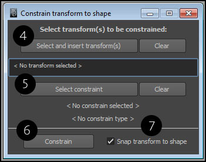

This is one of those situations which I’ve dealt with many times before, but I still needed a solution in a single script which would allow me to attach a transform to a desired shape. Here are some of the methods you can use to do this manually in Maya:
Applying pointOnSurfaceInfo / pointOnCurveInfo or pointOnMeshInfo (available in the devkit) to a shape node, which would constrain a transform by connecting to it.
Constraining a transform by a single (or a collection) of components on a surface or a curve. You can either constrain to vertices/CVs or an edge.
Using a follicle node attached to a surface or a mesh to drive a transform. This is only limited to surfaces and is not allowed on a curve.
Using a follicle node has been one of the more popular methods since hair system was announced for Maya, but I have found that at times it’s not accurate and is limited by the use of UVs on a polygon mesh. If you’re trying to find the nearest UV location on a polygon mesh from a transform using a closestPointOnMesh node, sometimes, you’ll find discrepancies with the result position value from the node. You can see in the example below that in order to find a nearest point for a space locator (1) on a polySphere, I’ve used a closestPointOnMesh(CPM) node to get the final world position of the result, represented by a yellow dot (2). The CPM node also provides a UV location for the closest point on the surface of the sphere, which is fed into a follicle node (3). Clearly, the follicle transform is not at the world space position of the result from the CPM node, which is more accurate.
In recent versions of Maya, a useful constraint, pointOnPoly has been added. But it’s only limited to meshes, and it depends on the surface UVs. It’s not a bad thing, but there’s always a situation when you want to modify them. Therefore, you’d have to re-constrain the transforms.
I’ve written a script which offers a workaround, where I’ve taken the same approach by Michael Bazhutkin (rivet script) to loft a surface between two curves on a surface and use a pointOnSurfaceInfo along with an aim constraint to attach a transform. The only problem was to find the nearest edge pair on a poly face on a mesh from a transform in space, which would be converted to curves to perform the loft. The script also uses a pointOnSurfaceInfo and pointOnCurveInfo along with a tangent constraint to attach a transform to a NURBS surface or a curve.

In the main window, you can select and insert multiple transforms which would be listed (4). You can also clear the transforms which will remove them from any operation. Then, you’d have to select the target shape for constraining (5). You can then perform constrain (6) on the transforms; any transform with locked translation or rotation will be skipped from constraining. You can maintain the position of the transform(s) by turning off Snap transform to shape (7).
To remove the constrain(s) from the transform(s) attached to the surface, delete all the created transform(s) with the suffix _attach.
"""
constrainTransformToShape.py - v1.1
v1.1 - Using constraint instead of DAG parenting to attach the
transform(s) to the driver transform(s) for a given surface.
Written by Himanish Bhattacharya
Documentation:
http://animformed.github.io/constraining-transforms-to-a-shape-in-maya/
Modify at your own risk.
DESCRIPTION:
This script constrains a transform to a shape, i.e, you can constrain multiple transform(s) to
a polygon mesh, nurbs surface or a curve. You can maintain the current position of the transform(s)
or snap it to the surface or curve. It uses pointOnSurfaceInfo to attach a transform to a surface,
so it does not depend on UVs, if constraing to a polygon surface.
CREDITS:
Michael Bazhutkin, the original author of the rivet script, for providing an important solution on how to use an
aim constraint with pointOnSurfaceInfo.
USAGE:
Simply copy all the contents of the script, make a shelf button and run it.
"""
import re
import maya.cmds as cmds
import maya.OpenMaya as om
######## DEFS ########
def insertTransForConstr(args):
"""
Inserts a selected transform for constraining into the UI field.
"""
selection = cmds.ls(selection=True)
objList = cmds.ls(selection, type='transform')
if objList:
s_height = len(objList)* 4
if s_height > 150:
s_height = 150
if s_height < 32:
s_height = 40
cmds.scrollField(selectionScrollList, edit=True, text=', '.join(objList), height=s_height)
else:
cmds.warning('Please select a transform.')
cmds.scrollField(selectionScrollList, edit=True, text=' < No transform selected > ', height=32)
def clearTransForConstr(args):
"""
Clears the transform name field in the UI for constraining.
"""
cmds.select(clear=True)
cmds.scrollField(selectionScrollList, edit=True, text=' < No transform selected > ', height=32)
def insertConstr(args):
"""
Checks and inserts a valid target shape to constrain to.
"""
selection = cmds.ls(selection=True)
if selection:
transShape = cmds.listRelatives(selection[0], children=True, shapes=True, noIntermediate=True)
if len(transShape) == 1:
o_type = cmds.objectType(transShape[0])
if o_type == 'mesh':
cmds.text(constrTextLineType, edit=True, label='Constrain on: Polygon mesh')
elif o_type == 'nurbsSurface':
cmds.text(constrTextLineType, edit=True, label='Constrain on: Nurbs surface')
elif o_type == 'nurbsCurve':
cmds.text(constrTextLineType, edit=True, label='Constrain on: Nurbs curve')
else:
cmds.warning('The selected object\'s shape \"%s\" cannot be constrained to. Select and insert another shape.'%(transShape[0]))
cmds.text(constrTextLine, edit=True, label=' < No constrain selected > ')
cmds.text(constrTextLineType, edit=True, label=' < No constrain type > ')
return
cmds.text(constrTextLine, edit=True, label='%s | %s'%(selection[0], transShape[0]))
else:
cmds.warning('Multiple shape nodes found on \"%s\". Cannot constrain.'% selection[0])
cmds.text(constrTextLine, edit=True, label=' < No constrain selected > ')
cmds.text(constrTextLineType, edit=True, label=' < No constrain type > ')
else:
cmds.warning('Please select a shape to constrain to.')
cmds.text(constrTextLine, edit=True, label=' < No constrain selected > ')
cmds.text(constrTextLineType, edit=True, label=' < No constrain type > ')
def checkAndAppendExistingNames(string):
"""
Checks for duplicate name in the dependency graph, appends a suffix if necessary,
and returns it.
"""
suffixList = [0]
if cmds.objExists(string):
if re.search('(?<=_)\d+$', string):
base = re.split('(?<=)_\d+$', string)[0]
else:
base = string
allNodes = cmds.ls()
for item in allNodes:
if re.match('^%s_\d+$'%base, item):
suffix = re.split('(\d+)$', item)[1]
suffixList.append(int(suffix))
currentSuffix = max(suffixList) + 1
return '{0}_{1}'.format(base, currentSuffix)
return string
def isAttributeLockedForTransInput(transform):
"""
Checks if one of the transform or rotate attributes in a transform is
locked. Returns a boolean.
"""
trans_attr_list = cmds.listAttr(transform, locked=True)
if trans_attr_list:
for attr in trans_attr_list:
if re.match('^(translate|rotate)[X-Z]$', attr):
return True
return False
def returnClosestEdgePairForPolyMesh(meshSurface, target):
"""
Returns a pair of edges for the closest face in polygon mesh with
respect to a target transform.
"""
# Stores the edge indices
r_edgeIndices = []
# Get the iterator instance for the mesh surface shape
m_sel_list = om.MSelectionList()
cmds.select(meshSurface, replace=True)
om.MGlobal.getActiveSelectionList(m_sel_list)
meshSurfacePath = om.MDagPath()
m_sel_list.getDagPath(0, meshSurfacePath)
meshSurfaceIt = om.MItMeshPolygon(meshSurfacePath)
# Create a temp CP node for the mesh surface
np_node = cmds.createNode('closestPointOnMesh', skipSelect=True)
cmds.connectAttr(meshSurface+'.outMesh', np_node+'.inMesh')
cmds.connectAttr(meshSurface+'.worldMatrix[0]', np_node+'.inputMatrix')
# Make temp grp to get a world transform for the target and feed it into the CP node.
trans_grp = cmds.group(empty=True)
tempConstraint = cmds.parentConstraint(target, trans_grp, maintainOffset=False)
cmds.delete(tempConstraint)
cmds.connectAttr(trans_grp+'.translate', np_node+'.inPosition')
# Get the closest face index for the target and return the edge indices.
f_index = cmds.getAttr(np_node+'.closestFaceIndex')
cmds.delete([np_node, trans_grp])
if f_index != -1:
m_int_util = om.MScriptUtil()
m_int_util.createFromInt(0) # Dummy face index
m_int_ptr = m_int_util.asIntPtr()
meshSurfaceIt.setIndex(f_index, m_int_ptr)
ei_array = om.MIntArray()
meshSurfaceIt.getEdges(ei_array)
ei_length = ei_array.length()
if ei_length == 4: # quad-face
r_edgeIndices = ei_array[0:3:2]
else: # n-gon-face
r_edgeIndices = [ei_array[0], ei_array[(ei_length/2)+1]]
cmds.select(clear=True)
return r_edgeIndices
def clearConstr(args):
"""
Clears the shape constrain name field in the UI.
"""
cmds.select(clear=True)
cmds.text(constrTextLine, edit=True, label=' < No constrain selected > ')
cmds.text(constrTextLineType, edit=True, label=' < No constrain type > ')
def createConstraint(args):
"""
Main procedure.
"""
constrTrans = cmds.text(constrTextLine, query=True, label=True)
trans_list = cmds.scrollField(selectionScrollList, query=True, text=True)
snapTransform = cmds.checkBox(noOffsetCheck, query=True, value=True)
sel_check = True
if constrTrans == ' < No constrain selected > ':
cmds.warning('Please select a shape to constrain to.')
sel_check = False
if trans_list == ' < No transform selected > ':
cmds.warning('Please select a transform to constrain.')
sel_check = False
if sel_check:
constrTrans, constrShape = constrTrans.partition('|')[0].strip(), constrTrans.partition('|')[2].strip()
trans_list = trans_list.split(', ')
if not cmds.objExists(constrTrans):
cmds.warning('Constraint object \"%s\" does not exist. Aborting.'%(constrTrans))
return
objShType = cmds.objectType(constrShape)
for item in iter(trans_list):
if not cmds.objExists(item):
cmds.warning('\"%s\" does not exist. Skipping.'%(item))
continue
if item == constrTrans:
cmds.warning('Cannot constrain the transform \"%s\" on its shape, \"%s\". Skipping.'%(item, constrShape))
continue
if isAttributeLockedForTransInput(item):
cmds.warning('One of the transform attribute is locked on \"%s\". Skipping.'%(item))
continue
# Create the attach/driver transform for constraining the item to the surface.
constr_driver = checkAndAppendExistingNames(item + '_attach')
cmds.group(empty=True, name=constr_driver)
if objShType == 'mesh' or objShType == 'nurbsSurface':
if objShType == 'mesh':
c_edgeIndices = returnClosestEdgePairForPolyMesh(constrShape, item)
if not c_edgeIndices:
cmds.error('Unknown error in mesh operation for the constraint polygon surface.')
return
# Create the loft from the nearest obtained edge pair.
# Edge 1 output.
edgeToCurve_n_1 = checkAndAppendExistingNames('%s_e%s_curveFromMeshEdge'%(constrShape, c_edgeIndices[0]))
cmds.createNode('curveFromMeshEdge', name=edgeToCurve_n_1, skipSelect=True)
cmds.setAttr(edgeToCurve_n_1+'.isHistoricallyInteresting', 1)
cmds.setAttr(edgeToCurve_n_1+'.edgeIndex[0]', c_edgeIndices[0])
# Edge 2 output.
cmds.connectAttr(constrShape+'.worldMesh[0]', edgeToCurve_n_1+'.inputMesh')
edgeToCurve_n_2 = checkAndAppendExistingNames('%s_e%s_curveFromMeshEdge'%(constrShape, c_edgeIndices[1]))
cmds.createNode('curveFromMeshEdge', name=edgeToCurve_n_2, skipSelect=True)
cmds.setAttr(edgeToCurve_n_2+'.isHistoricallyInteresting', 1)
cmds.setAttr(edgeToCurve_n_2+'.edgeIndex[0]', c_edgeIndices[1])
cmds.connectAttr(constrShape+'.worldMesh[0]', edgeToCurve_n_2+'.inputMesh')
# Driver loft.
loft_p_edges = checkAndAppendExistingNames('%s_edge_%s_%s_loft'%(constrShape, c_edgeIndices[0], c_edgeIndices[1]))
cmds.createNode('loft', name=loft_p_edges, skipSelect=True)
cmds.setAttr(loft_p_edges+'.uniform', 1)
cmds.setAttr(loft_p_edges+'.inputCurve', size=2)
cmds.setAttr(loft_p_edges+'.reverseSurfaceNormals', 1)
cmds.connectAttr(edgeToCurve_n_1+'.outputCurve', loft_p_edges+'.inputCurve[0]')
cmds.connectAttr(edgeToCurve_n_2+'.outputCurve', loft_p_edges+'.inputCurve[1]')
# Create the POS info on the loft to get the driver translation.
driver_pos_info = checkAndAppendExistingNames('%s_edge_%s_%s_loft_pos_info'%(constrShape, c_edgeIndices[0], c_edgeIndices[1]))
cmds.createNode('pointOnSurfaceInfo', name=driver_pos_info, skipSelect=True)
cmds.setAttr(driver_pos_info+'.turnOnPercentage', 1)
cmds.setAttr(driver_pos_info+'.parameterU', 0.5)
cmds.setAttr(driver_pos_info+'.parameterV', 0.5)
cmds.connectAttr(loft_p_edges+'.outputSurface', driver_pos_info+'.inputSurface')
# Create the aim constraint on the loft to get the driver rotation.
cmds.connectAttr(driver_pos_info+'.position', constr_driver+'.translate')
surf_n_aim = cmds.createNode('aimConstraint', parent=constr_driver, name=item+'_meshSurface_normalAim')
cmds.setAttr(surf_n_aim+'.aimVector', 0, 1, 0, type='double3')
cmds.setAttr(surf_n_aim+'.upVector', 0, 0, 1, type='double3')
cmds.connectAttr(driver_pos_info+'.normal', surf_n_aim+'.target[0].targetTranslate')
cmds.connectAttr(driver_pos_info+'.tangentV', surf_n_aim+'.worldUpVector')
cmds.connectAttr(surf_n_aim+'.constraintRotate', constr_driver+'.rotate')
if objShType == 'nurbsSurface':
# Create the temp CPOS to get the closest UV value on the surface for the transform.
np_node = cmds.createNode('closestPointOnSurface', skipSelect=True)
cmds.connectAttr(constrShape+'.worldSpace[0]', np_node+'.inputSurface')
# Temp loc for getting the world space position for the transform to the CPOS.
loc = cmds.spaceLocator()[0]
cmds.delete(cmds.pointConstraint(item, loc))
cmds.connectAttr(loc+'.translate', np_node+'.inPosition')
# Get the result UV from CPOS, and normalize for the surface UV range.
u_val = cmds.getAttr(np_node+'.parameterU')
v_val = cmds.getAttr(np_node+'.parameterV')
cmds.disconnectAttr(loc+'.translate', np_node+'.inPosition')
max_u = cmds.getAttr(constrShape+'.minMaxRangeU')[0][1]
max_v = cmds.getAttr(constrShape+'.minMaxRangeV')[0][1]
u_val = u_val / max_u
v_val = v_val / max_v
# Create the follicle to drive the driver/attach transform, and use the UV values.
driver_pos_info = checkAndAppendExistingNames('%s_onSurface_follicle'%(constrShape))
cmds.createNode('follicle', name=driver_pos_info, parent=constr_driver, skipSelect=True)
cmds.setAttr(driver_pos_info+'.parameterU', u_val)
cmds.setAttr(driver_pos_info+'.parameterV', v_val)
cmds.connectAttr(constrShape+'.worldSpace[0]', driver_pos_info+'.inputSurface')
cmds.connectAttr(constrShape+'.worldMatrix[0]', driver_pos_info+'.inputWorldMatrix')
cmds.connectAttr(driver_pos_info+'.outTranslate', constr_driver+'.translate')
cmds.connectAttr(driver_pos_info+'.outRotate', constr_driver+'.rotate')
cmds.delete(loc, np_node)
if objShType == 'nurbsCurve':
# Create the temp NPOC to get the closest U parameter on the curve for the transform.
np_node = cmds.createNode('nearestPointOnCurve', skipSelect=True)
cmds.connectAttr(constrShape+'.worldSpace[0]', np_node+'.inputCurve')
# Temp loc for getting the world space position for the transform to the NPOC.
loc = cmds.spaceLocator()[0]
cmds.delete(cmds.pointConstraint(item, loc))
cmds.connectAttr(loc+'.translate', np_node+'.inPosition')
# Get the closest U parameter on curve.
u_val = cmds.getAttr(np_node+'.parameter')
# Create the POC to drive the translation for the attach/driver transform, use the U value.
poc_info = cmds.createNode('pointOnCurveInfo', name=item+'_pocInfo', skipSelect=True)
cmds.connectAttr(constrShape+'.worldSpace[0]', poc_info+'.inputCurve')
cmds.setAttr(poc_info+'.parameter', u_val)
cmds.connectAttr(poc_info+'.position', constr_driver+'.translate')
# Drive the rotation for the driver transform.
cmds.tangentConstraint(constrTrans, constr_driver, name=constr_driver+'_tangentConstraint')
cmds.delete(loc, np_node)
if snapTransform:
# If "Snap transform to shape" is turned on.
cmds.delete(cmds.geometryConstraint(constrTrans, item))
cmds.parentConstraint(constr_driver, item, maintainOffset=True)
cmds.select(clear=True)
else:
return
######## UI ########
try:
cmds.deleteUI('hb_tr_constrain_window')
except Exception:
pass
tr_constrain_window = cmds.window('hb_tr_constrain_window', title='Constrain transform to shape'
, widthHeight=(400,400), resizeToFitChildren=True,
maximizeButton=False, sizeable=False)
try:
cmds.windowPref(tr_constrain_window, remove=True)
except Exception:
pass
tr_constrain_column = cmds.columnLayout('hb_tr_constrain_column',
adjustableColumn=True,
rowSpacing=8)
cmds.separator(style='none')
cmds.text(label='Select transform(s) to be constrained:', font='boldLabelFont')
cmds.setParent(tr_constrain_column)
cmds.rowLayout(numberOfColumns=2, columnWidth=([1, 100], [2, 100]),
columnAttach=([1, 'left', 20], [2, 'right', 20]))
cmds.button(label='Select and insert transform(s)', width=200, command=insertTransForConstr)
cmds.button(label='Clear', width=80, command=clearTransForConstr)
cmds.setParent(tr_constrain_column)
selectionScrollList = cmds.scrollField(text=' < No transform selected > ',
font='smallPlainLabelFont',
editable=False, height=32,
wordWrap=True)
cmds.setParent(tr_constrain_column)
cmds.rowLayout(numberOfColumns=2, columnAttach=([1, 'left', 20], [2, 'right', 20]))
cmds.button(label='Select constraint', width=200, command=insertConstr)
cmds.button(label='Clear', width=80, command=clearConstr)
cmds.setParent(tr_constrain_column)
constrTextLine = cmds.text(label=' < No constrain selected > ')
constrTextLineType = cmds.text(label=' < No constrain type > ')
cmds.separator()
cmds.rowLayout(numberOfColumns=2, columnAttach=([1, 'left', 25], [2, 'left', 20]))
cmds.button(label='Constrain', width=120, command=createConstraint)
noOffsetCheck = cmds.checkBox(label='Snap transform to shape', value=True)
cmds.setParent(tr_constrain_column)
cmds.separator(style='none')
cmds.showWindow(tr_constrain_window)